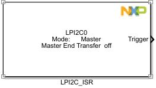
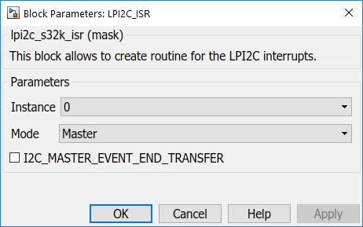

LPI2C ISR Block
This block allows the user to trigger a subsystem upon a specific event.
Block Image
Inputs:
- None.
Outputs:
- Trigger - function call for a subsystem.
Parameters and Dialog Box
The block dialog consists of the following tabs:
General
Instance
Select an instance of LPI2C to use (on S32K144 there is only one).
Mode
Select the role (either Master or Slave).
Events
Event checkboxes (depending on selected Mode).
- Master:
- MASTER END TRANSFER
- Slave:
- SLAVE RX REQUEST
- SLAVE TX REQUEST
- SLAVE TX EMPTY
- SLAVE RX FULL
- SLAVE STOP
Block Dependency
Block Miscellaneous Details
- None